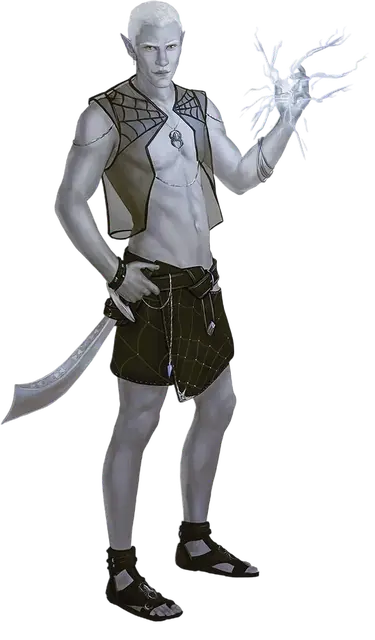

Дроу любимый консорт
Drow Favored Consort
Средний Гуманоид (Эльф, Волшебник), обычно нейтрально-злой

Класс Доспеха 15 (18 с доспехами мага)
Хиты 240 (32к8 + 96)
Скорость 30 футов
| мод | спас | ||
|---|---|---|---|
| СИЛ | 15 | +2 | +2 |
| ЛОВ | 20 | +5 | +11 |
| ТЕЛ | 16 | +3 | +9 |
| мод | спас | ||
|---|---|---|---|
| ИНТ | 18 | +4 | +4 |
| МДР | 15 | +2 | +2 |
| ХАР | 18 | +4 | +10 |
Навыки Акробатика +11, Атлетика +8, Восприятие +8, Скрытность +11
Чувства тёмное зрение 120 футов, пассивное Восприятие 18
Языки Подземный, Эльфийский
Опасность 18 (20000 опыта)
Бонус мастерства +6
Среда обитания Подземье
Особенности
Наследие фей. Дроу совершает с преимуществом спасброски от очарования, и магия не может его усыпить.
Чувствительность к солнечному свету. . Находясь на солнечном свету, дроу совершает с помехой броски атаки, а также проверки Мудрости (Восприятие), полагающиеся на зрение.
Действия
Мультиатака. Дроу совершает три атаки Скимитаром или Выбросом магии. Одна из этих атак может быть заменена Использованием заклинаний.
Скимитар. Рукопашная атака оружием: +11 к попаданию, дистанция 5 футов, одна цель. Попадание: 8 (1к6 + 5) рубящего урона плюс 27 (6к8) урона ядом.
Выброс магии. Дальнобойная атака заклинанием: +10 к попаданию, дистанция 120 футов, одна цель. Попадание: 36 (8к8) урона силовым полем и дроу может оттолкнуть цель на расстояние до 10 футов, если она Большого размера или меньше.
Использование заклинаний. Дроу накладывает одно из следующих заклинаний, без использования материальных компонентов используя Интеллект в качестве базовой характеристики (Сл спасброска от заклинаний 18):
• Неограниченно: пляшущие огоньки [dancing lights], доспехи мага [mage armor], волшебная рука [mage hand], сообщение [message];
• 3/день каждое: переносящая дверь [dimension door], огненный шар [fireball], невидимость [invisibility];
• 1/день каждое: тьма [darkness], огонь фей [faerie fire], левитация [levitate] (только на себя).
Реакции
Ограждающий щит (3/день). Когда по дроу или по существу в радиусе 10 футов от него попадают броском атаки, дроу даёт цели атаки бонус +5 к КД до начала следующего хода дроу, что может привести к промаху броска атаки.
Описание
Практически все жрицы Лолс, включая могущественных верховных матерей, выбирают привлекательных дроу в свои консорты. Зачастую такие личности бесполезны помимо принесения удовольствия, размножения, или и того, и другого, но иногда консорту удаётся заслужить внимание своей жрицы и стать её полезным советником. Мало кто задерживается в статусе консорта надолго; жрицы печально известны своей переменчивостью в отношениях со своими вторыми половинками, среди которых они особенно рады заполучить тех, кто сочетает в себе красоту и магическую силу.